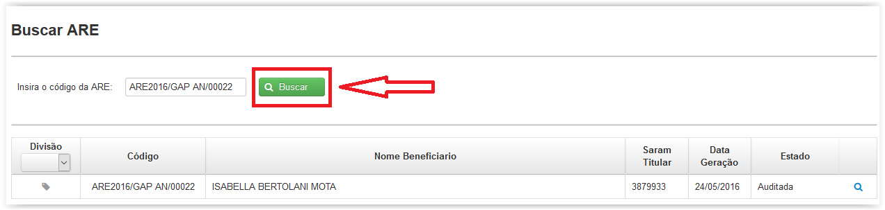
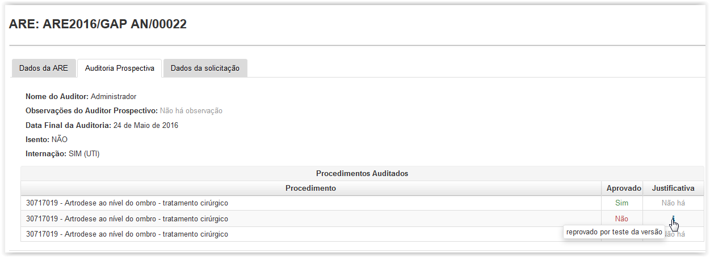

É necessário inserir o código da ARE e clicar em 'Buscar'. Caso a ARE esteja no estado "Em Auditoria" ou "Auditada",será possível visualizar os dados da GAB clicando no botão 'Visualizar' ).
).

Ao clicar no botao é possível visualizar informações do item de ARE, conforme mostrado abaixo:


Ao clicar na aba "Auditoria Prospectiva" o usuário tem a visualização das informações de Auditoria Prospectiva da ARE, conforme abaixo:

O usuário tem a opção de visualizar a "Justificativa" dos procedimentos auditados movendo o cursor para o ícone , conforme mostrado abaixo:

Ao clicar na aba "Dados da Solicitação" o usuário tem a visualização das informações da Solicitação de Ressarcimento que originou a ARE pesquisada, tendo-se a opção de efetuar o, conforme abaixo: